Clasificación de Datos Estadísticos
1. Datos Cuantitativos Discretos
Son datos numéricos que toman valores enteros y contables.
Ejemplo: Número de libros que leen estudiantes en un mes:
4, 4, 0, 2, 3, 1, 3, 5, 5, 5, 1, 5, 4, 5, 4, 1, 1, 1, 1, 4, 2, 5, 4, 1, 4, 2, 0, 2, 3, 2, 0, 3, 2, 0, 0, 5, 5, 4, 0, 5, 5, 3, 0, 2, 5, 5, 2, 2, 0, 2, 0, 1, 5, 2, 0, 2, 1, 2, 4, 1, 1, 1, 1, 1, 5, 2, 2, 4, 3, 1, 2, 5, 2, 0, 0, 4, 3, 3, 2, 4, 4, 0, 2, 2, 5, 4, 2, 3, 5, 3, 5, 3, 4, 3, 3, 3, 1, 3, 2
| Clase |
Frecuencia Absoluta |
Frecuencia Relativa |
Frecuencia Acumulada |
| 0 | 13 | 0.13 | 13 |
| 1 | 17 | 0.17 | 30 |
| 2 | 22 | 0.22 | 52 |
| 3 | 15 | 0.15 | 67 |
| 4 | 15 | 0.15 | 82 |
| 5 | 18 | 0.18 | 100 |
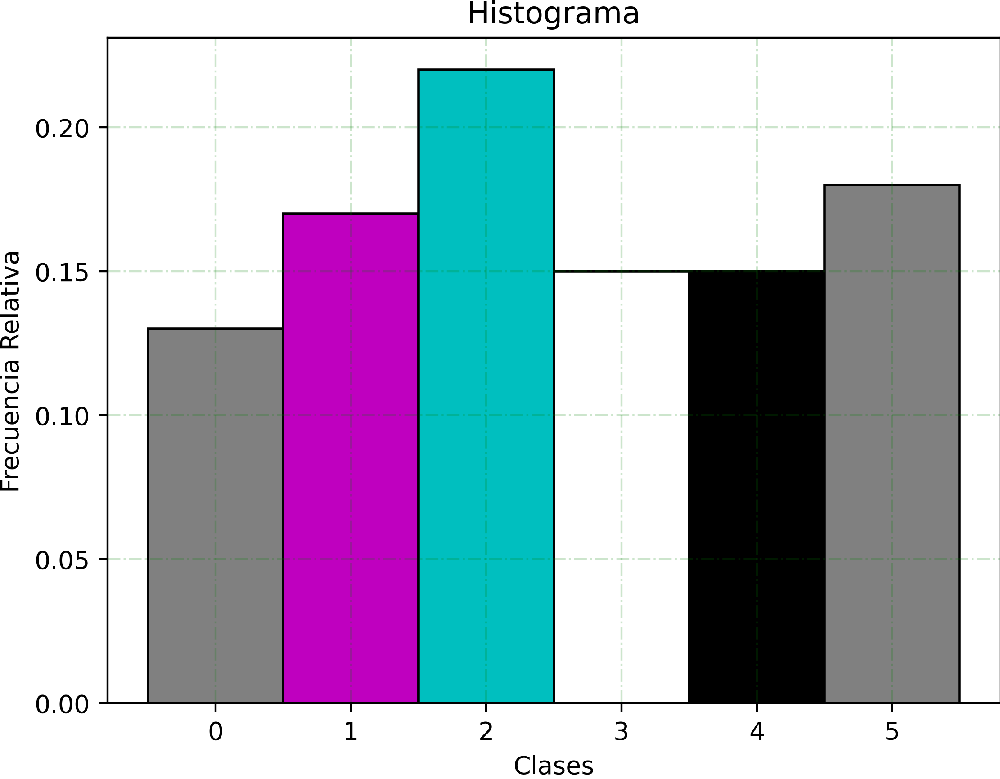
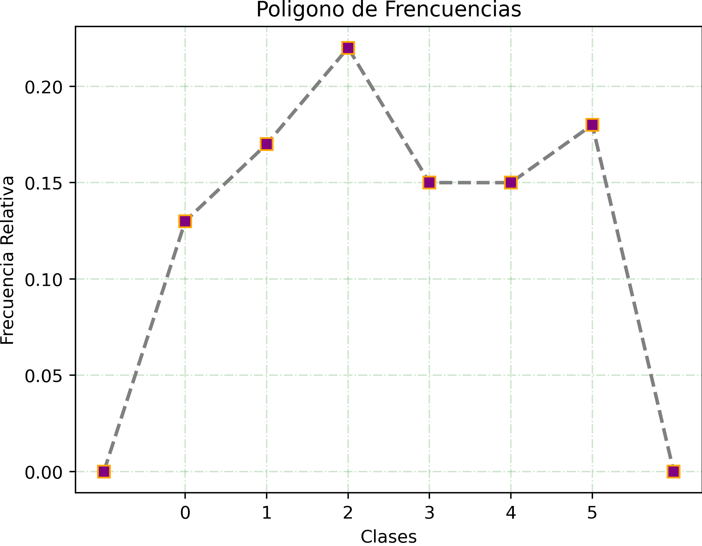
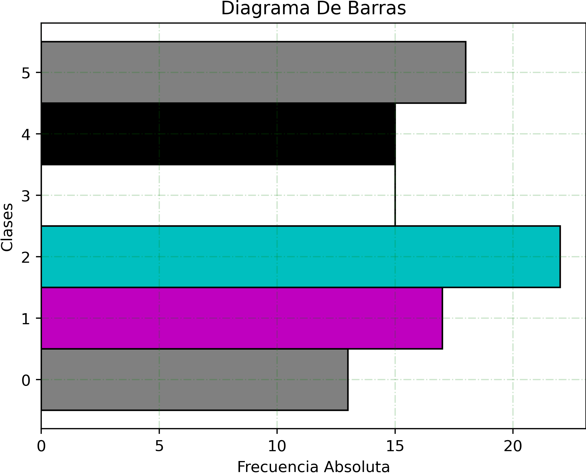
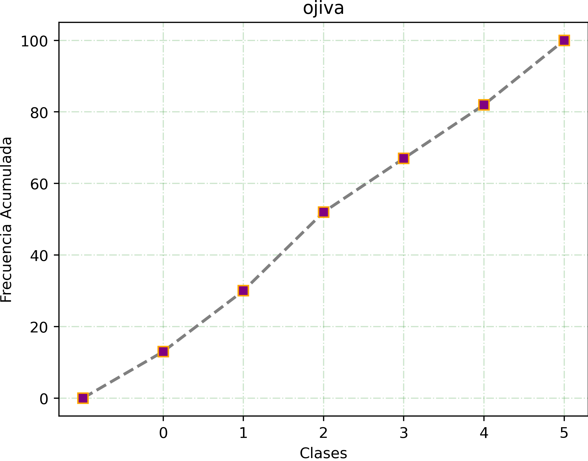
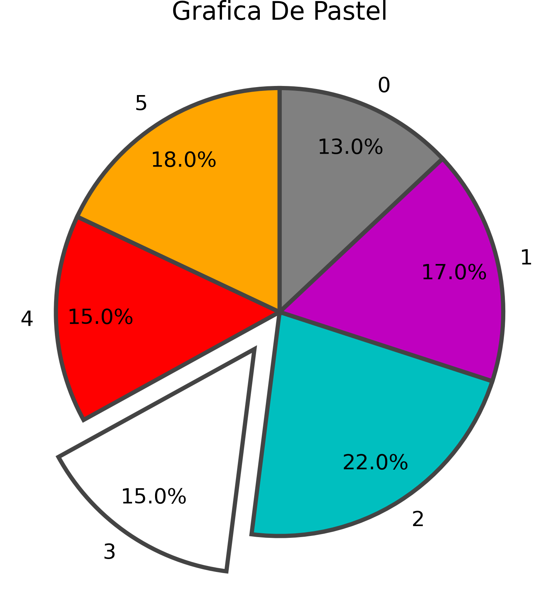
2. Datos Cuantitativos Continuos
Son datos numéricos que pueden tomar cualquier valor dentro de un intervalo.
Ejemplo: Tiempo en minutos que tarda una persona en resolver un examen:
73.46, 35.97, 51.96, 51.29, 81.29, 87.13, 77.12, 43.67, 74.25, 42.49, 86.21, 30.72, 30.44, 89.56, 46.56, 35.56, 30.63, 52.87, 63.67, 34.06, 57.94, 66.69, 32.13, 74.85, 42.40, 87.06, 84.75, 45.85, 68.25, 58.35, 44.60, 87.49, 64.42, 58.70, 83.75, 60.90, 84.09, 75.41, 33.37, 69.91, 49.84, 59.28, 82.76, 58.04, 67.03, 46.38, 35.04, 81.99, 55.90, 36.79, 79.87, 37.63, 73.20, 59.78, 45.13, 83.30, 37.50, 45.85, 59.68, 58.60, 41.55, 86.59, 70.68, 70.63, 42.34, 56.15, 32.84, 39.71, 76.29, 50.99, 44.75, 40.63, 83.74, 37.90, 84.46, 60.04, 57.79, 54.96, 55.82, 70.54, 67.35, 75.94, 35.60, 71.02, 87.98, 56.65, 75.09, 66.93, 67.40, 71.88, 51.75, 33.11, 66.21, 34.70, 48.25, 76.27, 64.98, 71.51, 49.40, 38.79
| Clase |
Límite Inferior |
Límite Superior |
Marca de Clase |
Frecuencia Absoluta |
Frecuencia Relativa |
Frecuencia Acumulada |
| 1 | 30.44 | 42.26 | 36.35 | 21 | 0.21 | 21 |
| 2 | 42.26 | 54.09 | 48.18 | 19 | 0.19 | 40 |
| 3 | 54.09 | 65.91 | 60.00 | 19 | 0.19 | 59 |
| 4 | 65.91 | 77.73 | 71.82 | 24 | 0.24 | 83 |
| 5 | 77.73 | 89.56 | 83.65 | 16 | 0.16 | 99 |
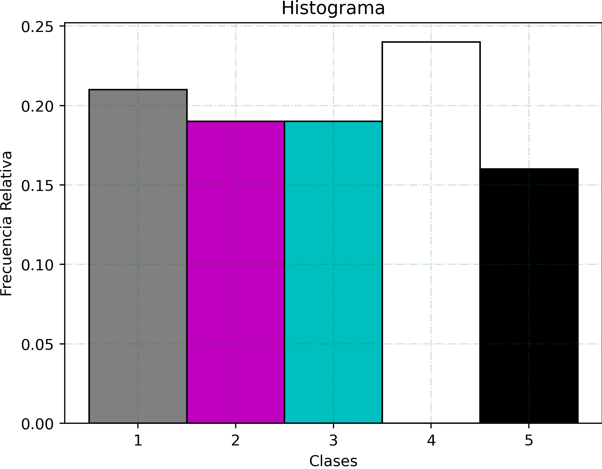
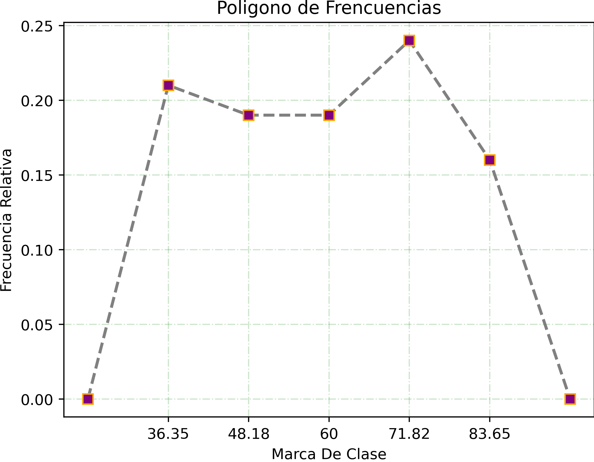
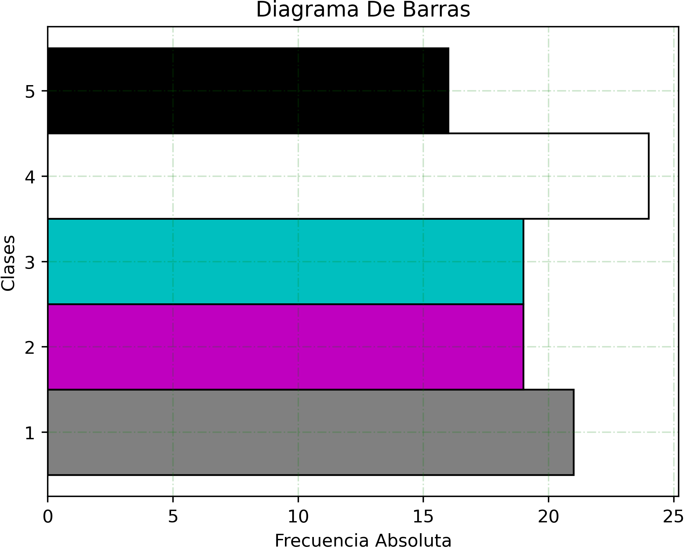
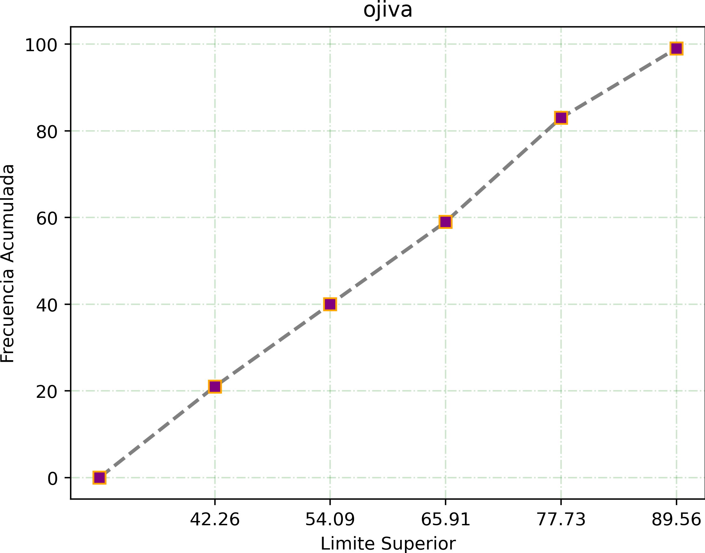
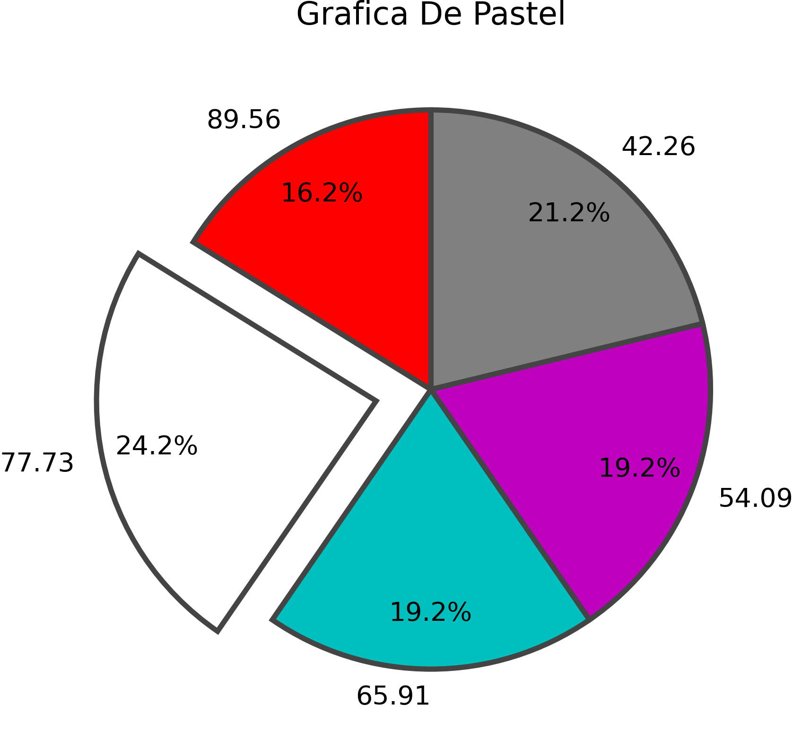
3. Datos Cualitativos
Son datos que describen cualidades o categorías.
Ejemplo: Medio de transporte utilizado por estudiantes para llegar a la escuela:
Camión, Bicicleta, Auto, Auto, Bicicleta, Auto, Bicicleta, Auto, Caminando, Auto, Auto, Camión, Caminando, Auto, Camión, Camión, Bicicleta, Auto, Auto, Camión, Auto, Auto, Caminando, Bicicleta, Caminando, Auto, Camión,
Camión, Camión, Bicicleta, Caminando, Bicicleta, Camión, Auto, Bicicleta, Bicicleta, Caminando, Bicicleta, Auto, Caminando, Auto, Caminando, Auto, Caminando, Camión, Camión, Caminando, Caminando, Camión, Caminando,
Caminando, Bicicleta, Bicicleta, Camión, Auto, Auto, Caminando, Caminando, Caminando, Bicicleta, Bicicleta, Bicicleta, Auto, Bicicleta, Bicicleta, Bicicleta, Auto, Caminando, Bicicleta, Bicicleta, Caminando, Caminando,
Caminando, Bicicleta, Auto, Auto, Caminando, Bicicleta, Caminando, Caminando, Caminando, Auto, Bicicleta, Camión, Caminando, Auto, Bicicleta, Bicicleta, Caminando, Auto, Bicicleta, Camión, Auto, Bicicleta, Bicicleta, Auto,
Auto, Bicicleta, Bicicleta, Camión.
| Clase |
Frecuencia Absoluta |
Frecuencia Relativa |
Frecuencia Acumulada |
| Camión | 16 | 0.16 | 16 |
| Bicicleta | 30 | 0.30 | 46 |
| Auto | 28 | 0.28 | 74 |
| Caminando | 26 | 0.26 | 100 |
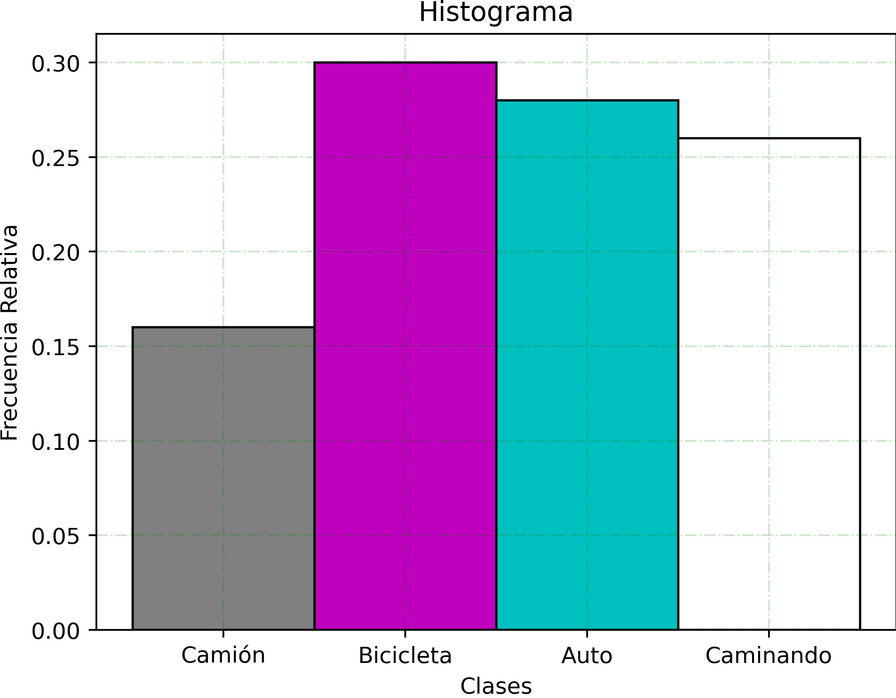
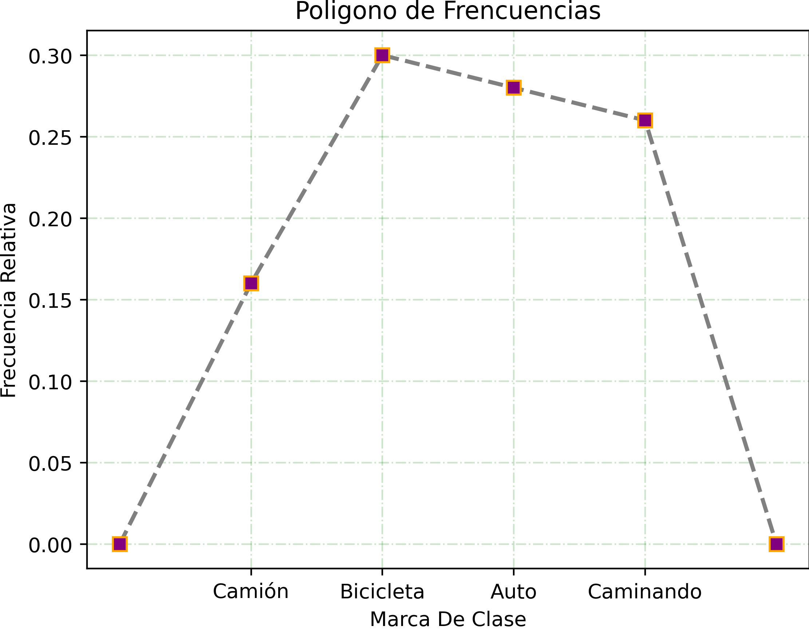
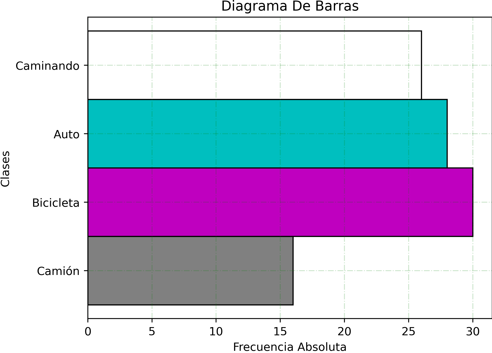
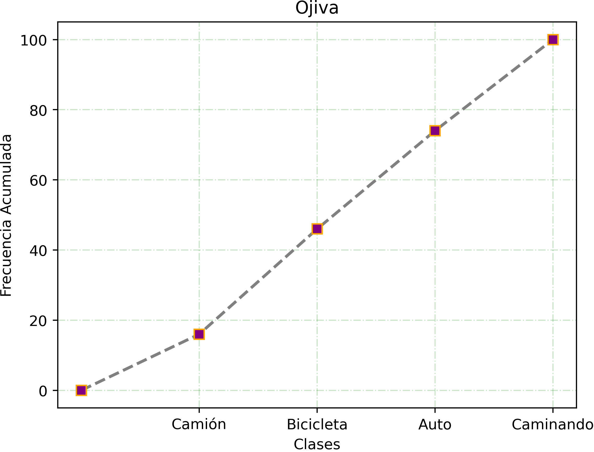
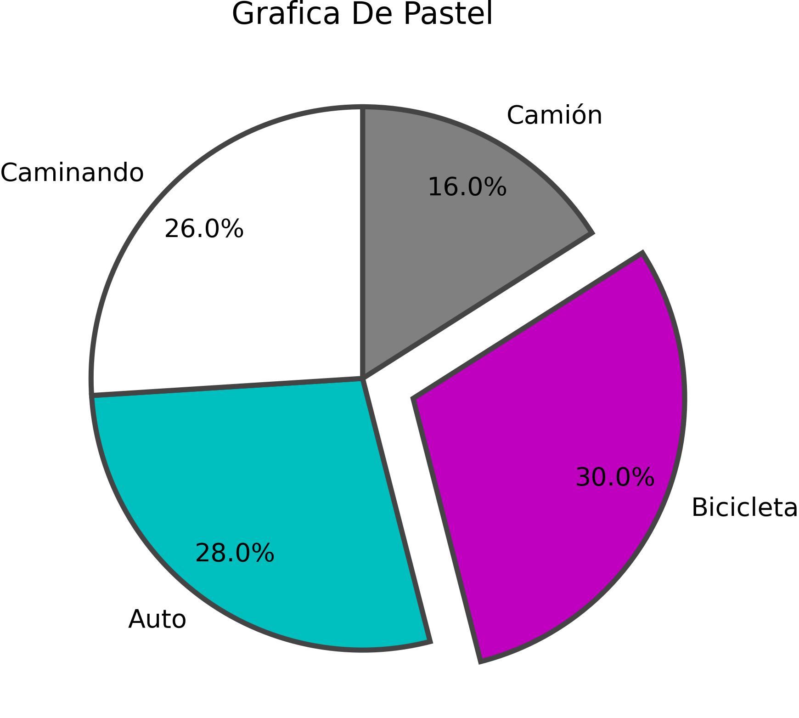